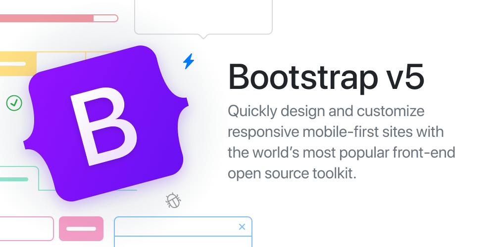

Versiones de Bootstrap
A continuación se listarán y describirán las diferentes versiones de Bootstrap
0 Twitter Blueprint
Antes de 2011
La primera versión de Bootstrap era simplemente un framework creado por varios empleados de twitter para así fomentar la consistencia entre todas las herramientas internas
1 Bootstrap 1.0
19 de Agosto de 2011
Fue el resultado de renombrar Twitter Blueprint, por lo que sus características son muy parecidas
2 Bootstrap 2.0
31 de enero de 2012
Esta nueva versión incorporó soporte propio para los Glyphicons, un conjunto de pictogramas para facilitar la navegación, así como nuevos componentes y cambios para los antiguos

3 Bootstrap 3.0
19 de Agosto de 2015
El 19 de agosto de 2013, se lanzó Bootstrap 3. Rediseñó los componentes para usar un diseño plano y un primer enfoque móvil. Bootstrap 3 presenta un nuevo sistema de complementos con eventos con espacio de nombres. Bootstrap 3 eliminó la compatibilidad con Internet Explorer 7 y Firefox 3.6, pero hay un polyfill opcional para estos navegadores.

4 Bootstrap 4.0
29 de octubre de 2014
Otto anunció Bootstrap 4 el 29 de octubre de 2014. La primera versión alfa de Bootstrap 4 se lanzó el 19 de agosto de 2015. La primera versión beta se lanzó el 10 de agosto de 2017. Otto suspendió el trabajo en Bootstrap 3 el 6 de septiembre de 2016 para liberar tiempo para trabajar en Bootstrap 4. Bootstrap 4 se finalizó el 18 de enero de 2018.
Los cambios más significativos son:
- Reescritura importante del código
- Reemplazar menos con Sass
- Incorporación de Reboot, una colección de cambios CSS específicos de elementos en un solo archivo, basado en Normalize
- Eliminación de la compatibilidad con IE8, IE9 e iOS 6
- Compatibilidad con caja flexible CSS
- Agregar opciones de personalización de navegación
- Adición de utilidades de tamaño y espaciado adaptables
- Cambiando de la unidad de píxeles en CSS a root ems
- Aumento del tamaño de fuente global de 14 px a 16 px para mejorar la legibilidad
- Soltar el panel, la miniatura, el buscapersonas y los componentes del pozo
- Dejar caer la fuente del icono Glyphicons
- Gran número de clases de servicios públicos
- Estilo de formulario, botones, menús desplegables, objetos multimedia y clases de imágenes mejorados

5 Bootstrap 5.0
5 de Mayo de 2021
Bootstrap 5 se lanzó oficialmente el 5 de mayo de 2021
Los principales cambios son:
- Nuevo componente de menú fuera del lienzo
- Eliminar la dependencia de jQuery a favor de JavaScript estándar
- Reescribiendo la cuadrícula para admitir medianeras y columnas receptivas colocadas fuera de las filas
- Migración de la documentación de Jekyll a Hugo
- Eliminación de la compatibilidad con Internet Explorer
- Mover la infraestructura de pruebas de QUnit a Jasmine
- Agregar un conjunto personalizado de íconos SVG
- Agregar propiedades personalizadas de CSS
- API mejorada
- Sistema de red mejorado
- Documentos de personalización mejorados
- Formularios actualizados
- Compatibilidad con RTL
